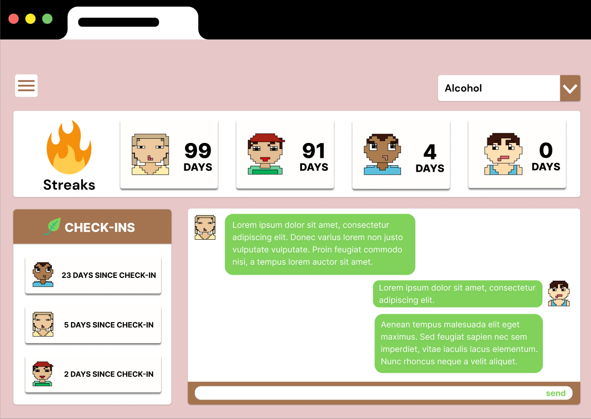

Iterative Design
Part I: Context/Problem
Relay! is a startup that aims to help people overcome their addictions through peer support and accountability. Relay groups 3-7 people together who are sharing a struggle, providing access to shame-free accountability and facilitated-connection.
For this project, my group and I were tasked with designing a website for Relay that would enable the application to achieve its goals by providing the best experience to its users.
Part II: Research and Feedback
We came up with some Key Components and presented our first mock-up of the website:

To which we received the following feedback:
- Confusion on which Navigation option the user is currently on
- Get started should direct to account creation
- Color Contrast adjustments
- Separate branding site from app website
Part III: Design Iterations
After implementing the feedback, we worked on design iterations of Figma and came up with the final mockup.